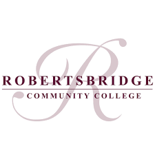

Thomas Smallwood
Things I Like.
I like maths with a close second being computing, my second used to be science but since then computing has
become much more interesting and enjoyable, now with a close third being science.
In Computing i have learnt many things about, computers, programing languages and scripts.
I most of all like and enjoy HTML with its added CSS and JavaScript languages using them is how i made
this website.
Education
I started my main education in Gueastling Primary School then moved to Staplecross parimary School.
I then started secondary school at Robertsbridge Community Collage.
